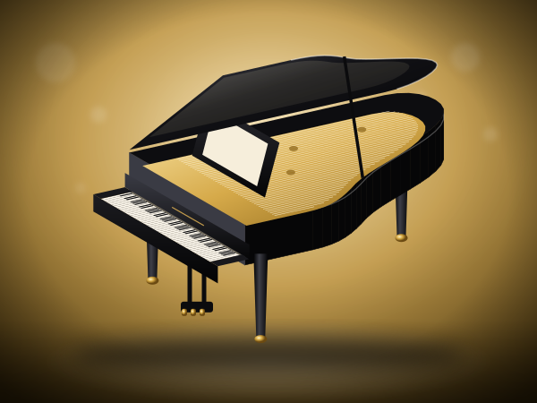
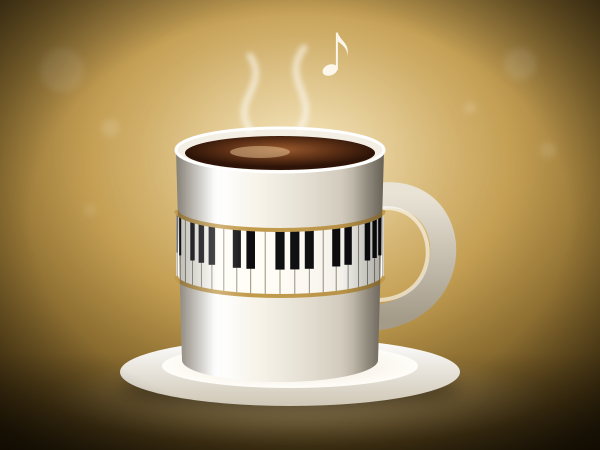
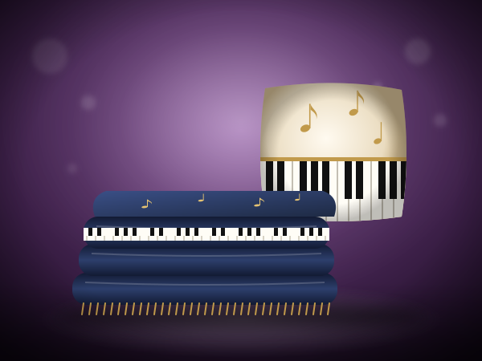
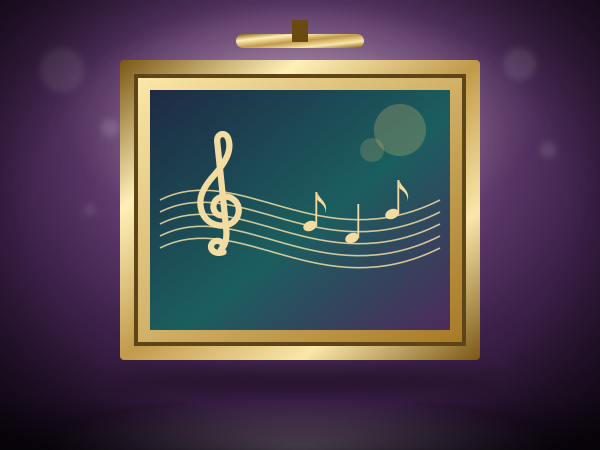
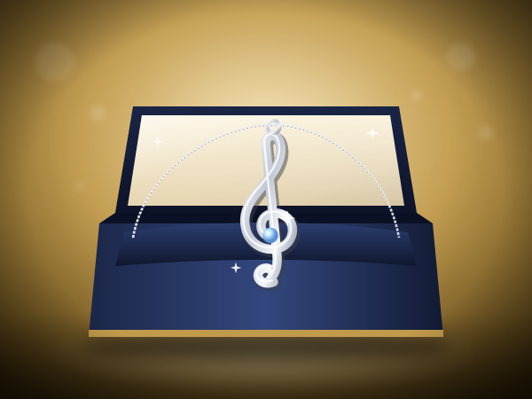

Miniature Wood Grand Piano
Miniature wood grand piano figurine. A thoughtful small gift for a pianist or music lover.
Check today's price on AmazonLeave your email, phone and how you found us. I read every message and listen to every recording myself.
Home / Shop / Music Home Decor
Chosen by a concert pianistNot every gift for a pianist has to be practical. A small piano figurine, a mug or a music-note blanket tells a musician that someone has noticed what they love. These are light, affordable ideas, described only by what each listing says.
Affiliate disclosure. As an Amazon Associate I earn from qualifying purchases. Some links on this page are affiliate links; buying through them costs you nothing extra.
Illustrations show the type of product; see the exact item and its photos on Amazon.
Not every gift for a pianist has to be practical. A small piano figurine, a mug or a music-note blanket tells a musician that someone has noticed what they love. These are light, affordable ideas, described only by what each listing says.
This page belongs to the Online Piano University shop because the people who learn with me, in my free 41-lesson course and later with my upcoming method books, are also the people who love music, and they are often the ones receiving or giving these gifts.
How this helps you learn: a music corner in the house is a small invitation to practice.

Miniature wood grand piano figurine. A thoughtful small gift for a pianist or music lover.
Check today's price on Amazon
The listing says musician coffee mug. Easy to give and easy to enjoy.
Check today's price on AmazonIn short, 17-key thumb piano gift. A light touch of music for a shelf or desk.
Check today's price on AmazonCrystal music-note figurine. Read the listing for size and material.
Check today's price on AmazonA thoughtful small gift for a pianist or music lover. Here: piano night light.
Check today's price on AmazonIn short, music tote bag. Easy to give and easy to enjoy.
Check today's price on Amazon
The listing says sheet-music print kitchen towels. A light touch of music for a shelf or desk.
Check today's price on AmazonRead the listing for size and material. Here: round piano-note rug for a practice corner, 3 ft, non-slip.
Check today's price on AmazonVinyl-record rug, fits a music room. A thoughtful small gift for a pianist or music lover.
Check today's price on AmazonThe listing says piano-key lumbar pillow cover. Easy to give and easy to enjoy.
Check today's price on AmazonIn short, black-and-white piano motif covers, easy room upgrade. A light touch of music for a shelf or desk.
Check today's price on AmazonPiano-key wall clock for a studio or practice room. Read the listing for size and material.
Check today's price on Amazon
A thoughtful small gift for a pianist or music lover. Here: metal music-note wall art.
Check today's price on AmazonIn short, metal Music Note Wall Sign. Easy to give and easy to enjoy.
Check today's price on AmazonThe listing says Chopin heroic-dance sheet-music art for pianists. A light touch of music for a shelf or desk.
Check today's price on AmazonRead the listing for size and material. Here: framed treble clef canvas, ready to hang.
Check today's price on AmazonVinyl record wall display set. A thoughtful small gift for a pianist or music lover.
Check today's price on AmazonThe listing says musical-note metal bookends for the music shelf. Easy to give and easy to enjoy.
Check today's price on AmazonIn short, wall-mounted music note set. A light touch of music for a shelf or desk.
Check today's price on AmazonCeramic piano and music-note coasters. Read the listing for size and material.
Check today's price on AmazonA thoughtful small gift for a pianist or music lover. Here: six pairs of music-theme socks, a multi-gift pack.
Check today's price on AmazonIn short, piano and music-note socks. Easy to give and easy to enjoy.
Check today's price on AmazonThe listing says music Keychain. A light touch of music for a shelf or desk.
Check today's price on AmazonRead the listing for size and material. Here: piano keychain.
Check today's price on Amazon12 Pcs Creative Musical Note Refrigerator Magnets. A thoughtful small gift for a pianist or music lover.
Check today's price on AmazonThe listing says music-note oven mitt and pot holder set. Easy to give and easy to enjoy.
Check today's price on AmazonIn short, piano-print oven mitts for a musician's kitchen. A light touch of music for a shelf or desk.
Check today's price on AmazonMusic-note kitchen towels. Read the listing for size and material.
Check today's price on AmazonA thoughtful small gift for a pianist or music lover. Here: music-note phone case, fits iPhone 12/12 Pro only.
Check today's price on AmazonIn short, music-note fitted sheet. Easy to give and easy to enjoy.
Check today's price on AmazonThe listing says music-instrument apron, guitar-leaning, not piano-specific. A light touch of music for a shelf or desk.
Check today's price on AmazonRead the listing for size and material. Here: music-note shower curtain.
Check today's price on Amazon
Sterling silver music-symbol pendant. A thoughtful small gift for a pianist or music lover.
Check today's price on AmazonThe listing says treble clef necklace, plated, not sterling. Easy to give and easy to enjoy.
Check today's price on AmazonIn short, music charm bracelet. A light touch of music for a shelf or desk.
Check today's price on AmazonBeaded music-note bracelet for recitals and teachers. Read the listing for size and material.
Check today's price on AmazonA thoughtful small gift for a pianist or music lover. Here: pianist-themed bracelet.
Check today's price on AmazonIn short, cufflinks plus tie clip, treble clef. Easy to give and easy to enjoy.
Check today's price on AmazonThe listing says treble clef cufflinks in presentation box. A light touch of music for a shelf or desk.
Check today's price on AmazonRead the listing for size and material. Here: 925 Sterling Silver Musical Note Earrings Treble Clef.
Check today's price on AmazonSterling silver quaver-note necklace. A thoughtful small gift for a pianist or music lover.
Check today's price on AmazonThe listing says piano pendant among instrument options, not sterling. Easy to give and easy to enjoy.
Check today's price on AmazonIn short, music note throw blanket. A light touch of music for a shelf or desk.
Check today's price on AmazonWooden piano model kit gift. Read the listing for size and material.
Check today's price on AmazonA thoughtful small gift for a pianist or music lover. Here: music room canvas wall art.
Check today's price on AmazonIn short, music-themed bedding set. Easy to give and easy to enjoy.
Check today's price on AmazonThe listing says handmade real-vinyl wall clock. A light touch of music for a shelf or desk.
Check today's price on AmazonRead the listing for size and material. Here: musical-theme duvet cover set.
Check today's price on AmazonPiano keyboard comforter set, queen size. A thoughtful small gift for a pianist or music lover.
Check today's price on AmazonThe listing says sterling silver necklace and earrings, music note. Easy to give and easy to enjoy.
Check today's price on AmazonIn short, treble Clef Dangle Earrings. A light touch of music for a shelf or desk.
Check today's price on AmazonSterling music note and treble clef earrings. Read the listing for size and material.
Check today's price on AmazonA thoughtful small gift for a pianist or music lover. Here: sterling silver instrument pendant.
Check today's price on AmazonA music tote, a practice journal or a mug is easy to give. My gift guide for adult piano students has more ideas.
Something small and personal, such as a book or a music-themed gift, is usually appreciated.
It is a pleasant small instrument for a gift, but it does not replace learning the piano.
See my gift guides for pianists, adult piano students and the holidays.
A few special-occasion splurges.
Listening, calm, sound.
Gift ideas for pianists by size of gift.
The shop exists to support your learning. The learning itself is free: all 41 lessons of my beginner course are published, and I give feedback on your playing at no charge.
▶ Start the free 41-lesson course Send me your playing for feedback → Give online piano lessons
Send a message or attach a recording. Email, phone and how you found us help me answer you properly.
The first steps to start the right way — no bad habits to un-learn. Join fellow beginners learning with a real university teacher.
✓ Thank you — check your inbox!
No spam — just piano. Unsubscribe anytime.
Every decade brings its own music and its own obstacles. Find the plan for yours:
Learn piano in your 20s · Learn piano in your 30s · Learn piano in your 40s · Learn piano in your 50s · Learn piano in your 60s · Learn piano in your 70s and beyond
Online Piano University is run by one teacher. I read every message and listen to every recording myself.
Contact
maria@onlinepianouniversity.com
Full contact page
Feedback on your playing
Free 41-lesson course
Piano lessons by age
Free Starter Guide
✓ Thank you — check your inbox!
Follow along